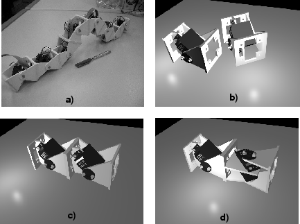

Next: 2 El robot ápodo Up: Evaluación de un Algoritmo Previous: Evaluación de un Algoritmo


Next: 2 El robot
ápodo Up: Evaluación
de un Algoritmo Previous: Evaluación
de un Algoritmo
Los robots modulares y reconfigurables ofrecen la promesa de una mayor versatilidad, robustez y bajo coste[1]. Están compuestos de módulos capaces de unirse y separarse entre ellos, cambiando la forma del robot. Conviene aclarar que en este contexto, la palabra ``reconfigurable'' se refiere a la habilidad del robot para cambiar su forma. En los últimos años, el número de robots que siguen este enfoque ha crecido considerablemente[2][3][4][5].
Uno de los más avanzados es Polybot[1][6], diseñado en el PARC (Palo Alto Research Center). Puede adoptar múltiples formas y moverse de diferentes maneras. Por ejemplo, puede desplazarse como una rueda, despúes transformarse en una serpiente, con movimiento sinusoidal y finalmente convertirse en una araña de cuatro patas. Actualmente están diseñando la tercera generación de módulos[7]. Cada uno de ellos tiene su propio procesador PowerPC 555 en un chip.
Un paso más en la versatilidad es el uso de una FPGA en vez de un chip convencional. Ofrece al diseñador la posibilidad de implementar nuevas arquitecturas, algoritmos de control más rápidos o incluso modificar dinámicamente el hardware para adaptarlo a una nueva situación. En resumen, los robots modulares y reconfigurables controlados por FPGA no sólo pueden cambiar su forma, sino también su hardware, con lo que aumentan todavía más su versatilidad.
Una implementación de la locomoción de un robot ápodo usando FPGA se realizó con éxito[8]. Se utilizó el procesador MicroBlaze[9] para la ejecución del algoritmo y se añadió un hardware específico para posicionar los servos.
En este artículo se evalúa el algoritmo de locomoción para un robot ápodo de 8 módulos (figura 1) en diferentes procesadores empotrados en FPGA: MicroBlaze, PowerPC[10] y LEON2[11]. El tiempo que tarda el algoritmo en completar la generación del movimiento se calcula en función del número de nodos del robot, obteniéndose información sobre la escalabilidad. Estos resultados experimentales se utilizarán en los trabajos futuros para seleccionar las arquitecturas que mejor se ajusten a una determinada aplicación.
La organización del artículo es la siguiente. Primero se introduce brevemente el robot ápodo. Después se describen los detalles del algoritmo para la generación de movimiento y finalmente se muestran los resultados de la implementación.
|
 |
Figure 1: a) El robot ápodo ``Cube Revolutions'', formado por 8 módulos iguales, conectados en fase. b) Modelo 3D de dos módulos Y1. c) Dos módulos Y1 conectados en fase. d) Dos módulos Y1 conectados en desfase. Uno rota paralelamente al suelo y el otro perpendicular.


Next: 2 El robot
ápodo Up: Evaluación
de un Algoritmo Previous: Evaluación
de un Algoritmo